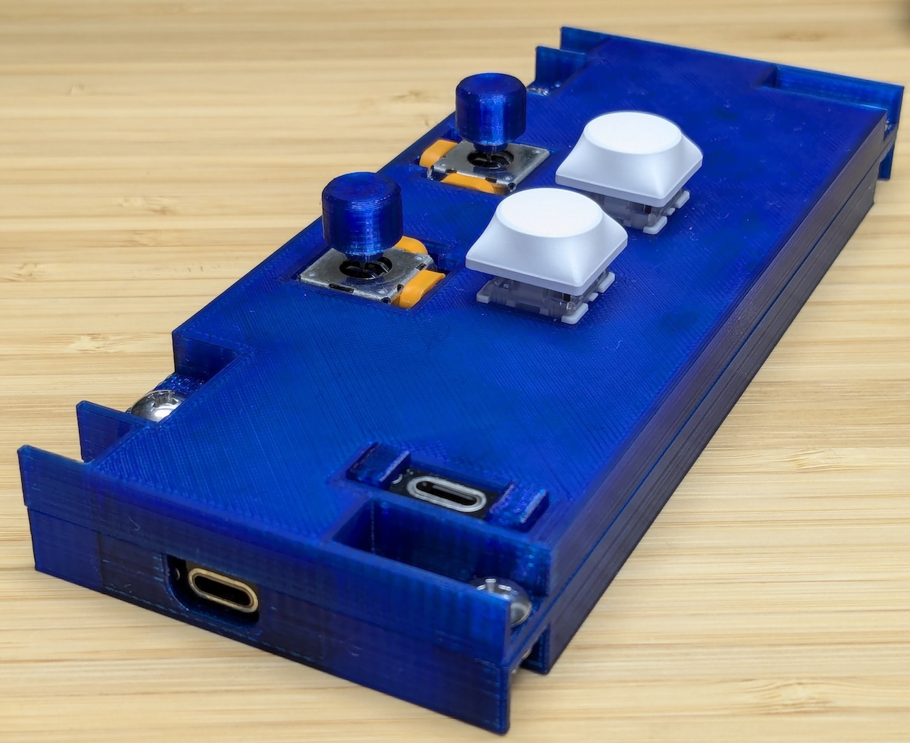
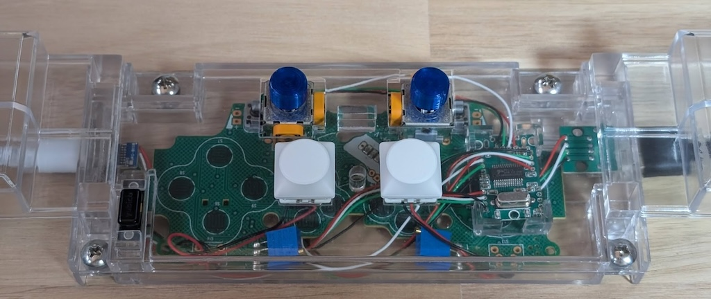
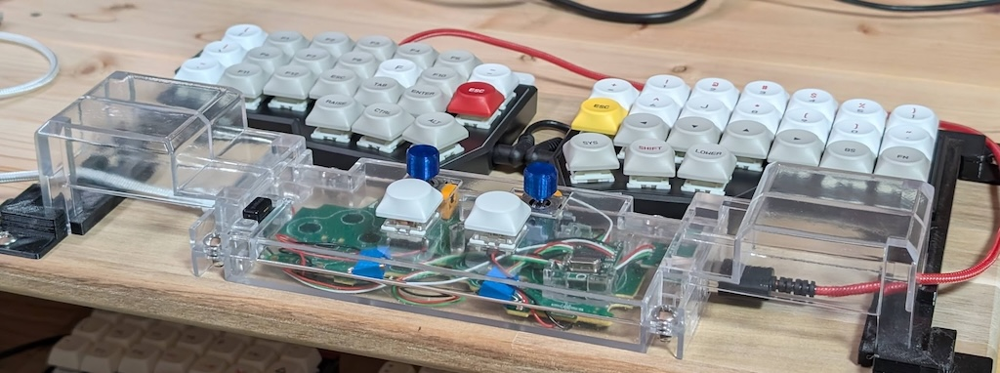
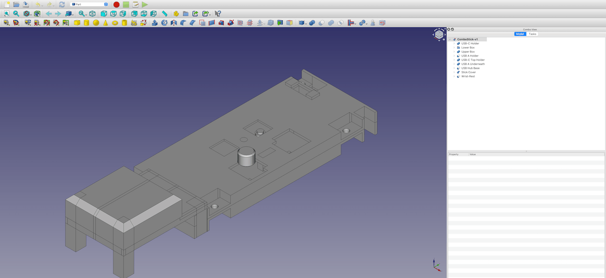
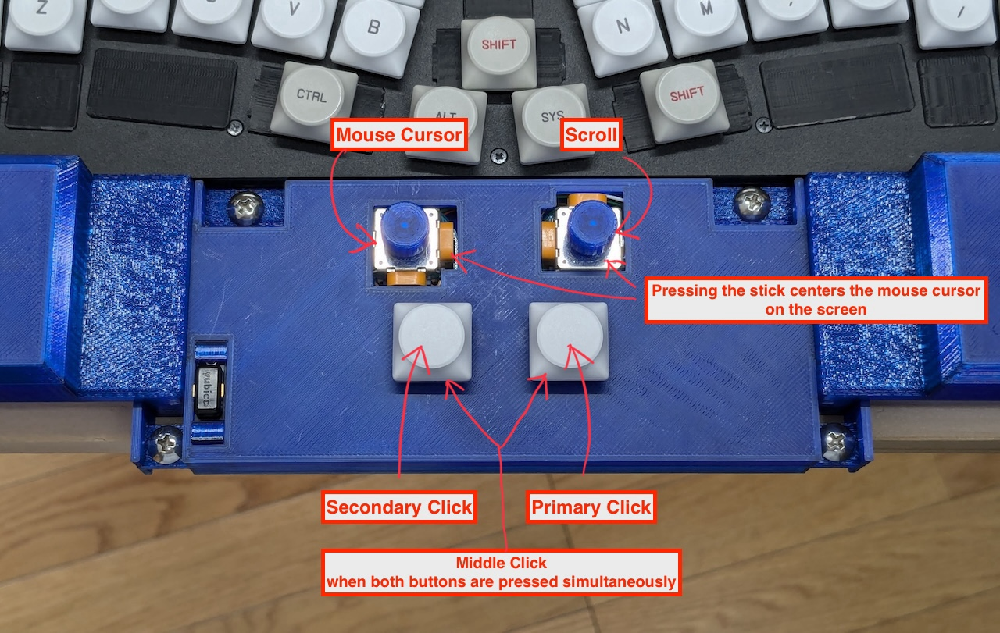

Usage
Pointer control
Mouse cursor movement begins by tilting the left stick. While only the left stick is used, the pointer moves slowly.
If you tilt the right stick while the left stick is sufficiently tilted, the pointer accelerates. The right stick doesn't influence the direction of the pointer's movement, so you can tilt it in whatever direction is easiest for you.
Scroll
Tilting the right stick first, as opposed to the pointer control, initiates a scrolling action.

Ergonomic
This mouse uses a joystick attached to a wrist rest for moving the pointer and scrolling, enabling you to operate the mouse without removing your hands from the keyboard.
Inexpensive
This device is made by slightly modifying the circuit board of the affordable Logitech F310 and combining it with a 3D-printed case.
Smooth operation
By using two sticks simultaneously, one for directional control and the other for speed control, this device achieves a balance between precise and high-speed operations.